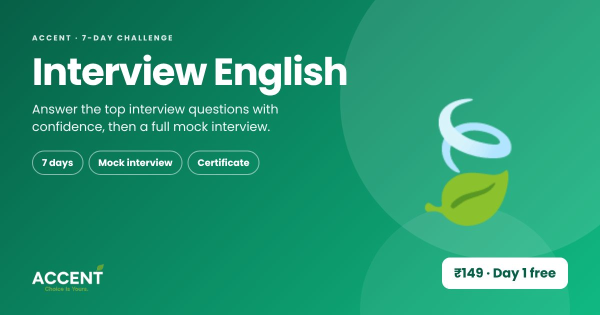

Kudumbashree: how Kerala's neighbourhood groups built businesses
Kudumbashree began as a neighbourhood group in Alappuzha in 1992, was piloted in Malappuram in 1994, and was formally registered in 1998. It grew from small groups of women meeting every week into a statewide network of about 41.5 lakh members.
How it grew
- Neighbourhood first: groups of about 20 women who already knew and trusted each other.
- Savings, then skills, then income: a savings habit came first, then training, then small businesses.
- Train for real demand: when digitisation created jobs, members were trained in data entry; others run catering, tailoring, farming, canteens and food units.
- Sell where people gather: statewide Onam fairs became a major sales channel.
Lessons for learners and young entrepreneurs
- Your network is your first market. Trust travels faster through people who know you.
- Learn the skill the market is asking for.
- Keep reinventing. New products and services kept the groups growing.
Sources
Build the skills the market wants
Start with a free lesson, then practise with Ila and get interview-ready.
Try Interview English free